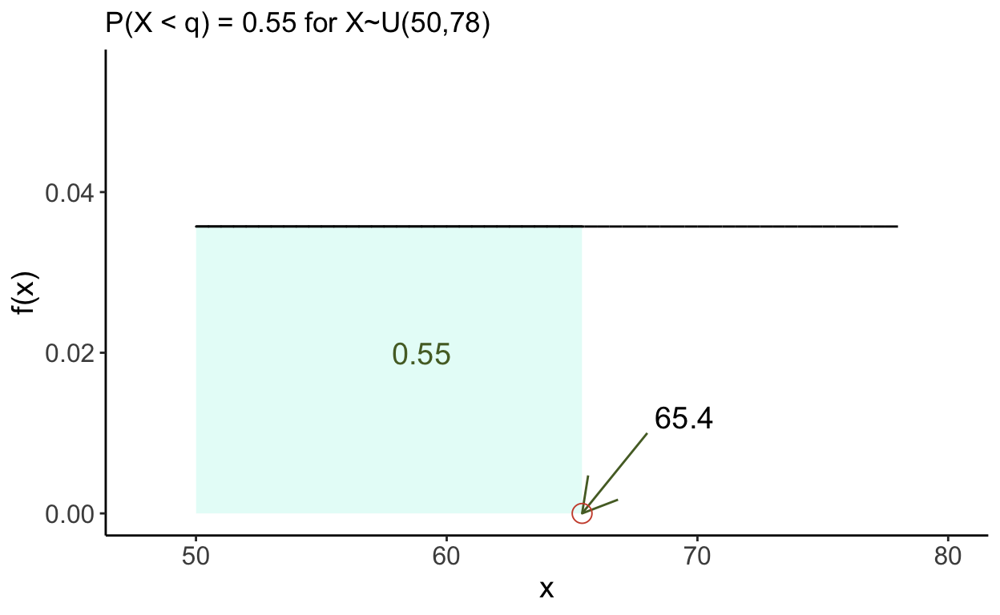

In this tutorial we learn about various common probability distributions used in R that have pre-made functions built in to R for solving various problems.
For each distribution we will:
Review the distribution’s pdf, shape, and parameters
Use R to calculate the probability of falling in a range of values
Use R to calculate quantiles for the distribution
Use R to find the value of the PDF at a particular \(x\)
Generate random values from the distribution
In a (continuous) uniform distribution, all points in the sample space are equally likely to occur. This means that our PDF is a flat line and the area under the PDF is a rectangle. To completely identify a uniform distribution, we need to know the range of values our variable can take on. For a random variable \(X\) that follows a uniform distribution that takes on values between \(a\) and \(b\) we write:
\[X\sim U(a, b)\]
and express the PDF as:
\[\begin{equation*} f(x)=\begin{cases} \dfrac{1}{b-a} \quad &\text{if} \, x \in \left[a,b\right] \\ 0 \quad &\text{otherwise}\\ \end{cases} \end{equation*}\]
NOTE: This is the same as saying the height of the density curve is 1 / (base) as the area of a rectangle is (base) x (height) and that must equal 1.
The graph of the PDF is:
To find the probability of being less than a point \(q\), i.e.
\[ P(X<q) = \int_{-\infty}^qf(t)dt,\] we can use the
punif(q, min = a, max = b)
function. If no values are specified for \(a\) and \(b\), R will assume you want the interval \((0,1)\) by default.
Example Suppose \(X\) follows a uniform distribution from 7 to 23. What is the probability that \(X\) is less than 19?
Solution \(P(X<19)=\)
punif(19, 7, 23)## [1] 0.75Visually, this looks like:
To find the probability of being greater than a point \(q\), i.e.
\[ P(X>q) = \int_{q}^{\infty}f(t)dt,\] we can use either
1 - punif(q, min = a, max = b)
or
punif(q, min = a, max = b, lower.tail = FALSE)
function. As the area under the curve is equal to 1, the probability of being greater than the point \(q\) is the complement of the probability of being less than the point \(q\).
Example Suppose \(X\) follows a uniform distribution from 18 to 38. What is the probability that \(X\) is greater than 24?
Solution \(P(X>24)=\)
1 - punif(24, 18, 38)## [1] 0.7or
punif(24, 18, 38, lower.tail = FALSE)## [1] 0.7Visually, this looks like:
To find the probability of being between two points \(q\) and \(r\) (where \(q<r\)), i.e.
\[ P(q<X<r) = \int_{q}^{r}f(t)dt,\] we can use thepunif()
function as:
punif(r, min = a, max = b) - punif(q, min = a, max = b)
. As thepunif()
function gives the area to the left of the point, subtracting the area to the left of the smaller number from the area to the left of the larger number will give the area inbetween.
Example Suppose \(X\) follows a uniform distribution from 3 to 25. What is the probability that \(X\) is between 11 and 24?
Solution \(P(11 < X < 24)=\)
punif(24, 3, 25) - punif(11, 3, 25)## [1] 0.5909091Visually, this looks like:
# Solution 1
1 - punif(20.9, 20, 24)
# Solution 2
punif(20.9, 20, 24, lower.tail = FALSE)punif(71, 62, 79)# Solution
punif(60.5, 58, 62) - punif(59.5, 58, 62)# **Hint:** The intended length is 60 cm. Within 0.5cm of the intended length means between 0.5 below and 0.5 above
# the intended length.Click through the hints to reveal the solution
By definition, the \(p^{\text{th}}\) percentile is the point \(q\) such that \(P(X<q) = p\). That is to say, the area to the left of the point \(q\) is \(p\).
To find the \(p^{\text{th}}\) percentile of an \(U(a,b)\) distribution, i.e. the point \(q\) such that
\[ P(X<q) = \int_{-\infty}^qf(t)dt = p\] we can use the
qunif(p, min = a, max = b)
function. If no values are specified for \(a\) and \(b\), R will assume you want the interval \((0,1)\) by default.
Example Suppose \(X\) follows a uniform distribution from 50 to 78. What is the \(55^{\text{th}}\) percentile of the distribution?
Solution Find \(q\) such that \(P(X<q)=0.55\)
qunif(0.55, 50, 78)## [1] 65.4Visually, this looks like:

NOTE: When we used the punif() function, we inputted the value of \(q\) to find the probability \(p\). When we used the qunif() function, we inputted the probability \(p\) to find the value \(q\). They are inverse functions of one another.
qunif(0.87, 15, 18)# Hint 1
# This is a uniform distribution. The distance between 2 and $q$ is the same at the distance between 1 and the 31st percentile.# Hint 2
# qunif(0.31, 1, 3) is the distance from 1 to the 31st percentile. How should we adjust it?# Solution
2 + qunif(0.31, 1, 3)Click through the hints to see the solution.
Using R, we can generate a vector of values from a uniform, \(U(a,b)\), distribution by using the
runif(n, min = a, max = b)
function. This will generate a vector of size \(n\) with \(n\) values from a \(U(a,b)\) distribution. This vector can also be saved to an object if needed.
Example Create a vector with 15 observations from a uniform distribution from 20 to 63.
Solution
runif(50, 20, 63)## [1] 49.56789 52.19369 22.63360 29.83136 55.30273 51.58347 28.76672 50.89937
## [9] 62.88675 42.16144 43.09501 21.39242 39.67446 51.94471 55.78554 56.46485
## [17] 53.12986 62.99526 62.66643 62.58360 24.27332 25.75625 35.23715 45.86798
## [25] 52.68473 45.51602 56.01133 24.36447 37.66114 47.72492 22.71469 32.18242
## [33] 21.05996 27.79724 25.08227 52.23908 21.43339 60.06140 34.23544 23.73163
## [41] 41.41703 39.21229 44.43239 53.81472 62.02540 60.70113 55.87085 37.47107
## [49] 27.28540 46.65462You will note that all these values fall between 20 and 63.
runif(14, 0, 1)